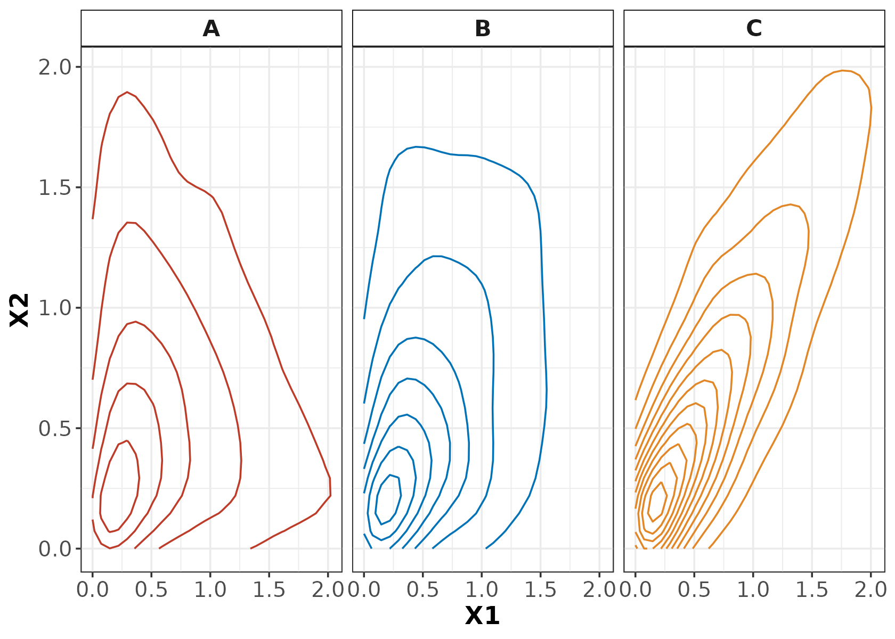
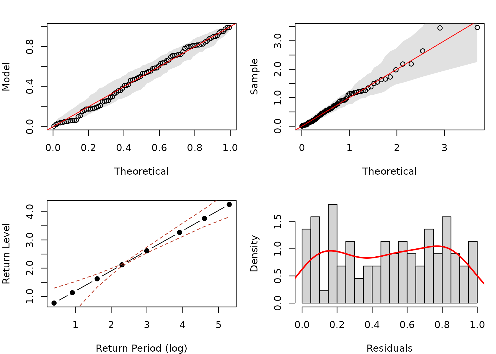
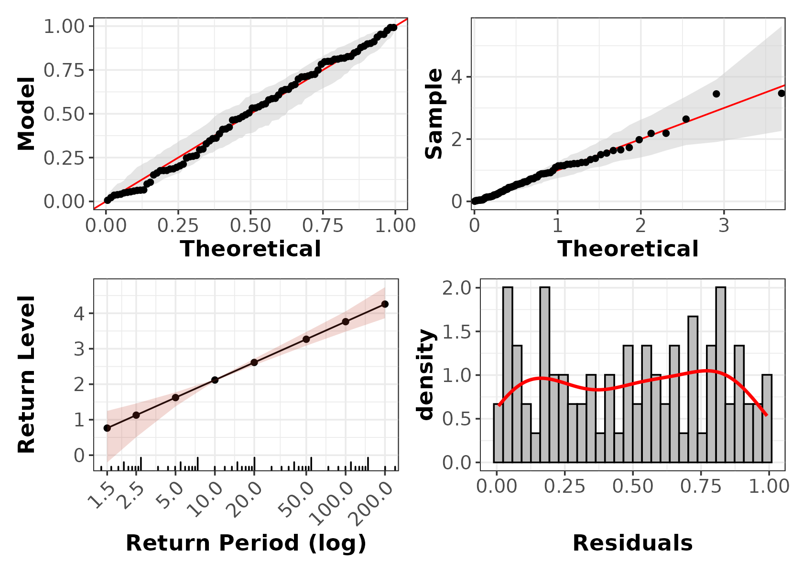
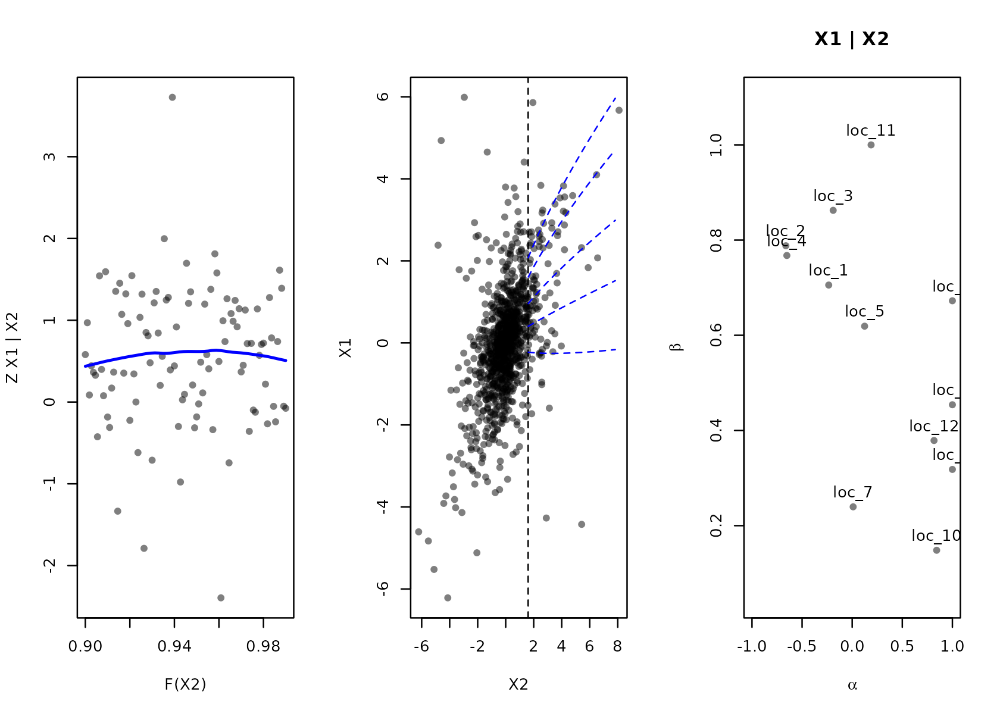
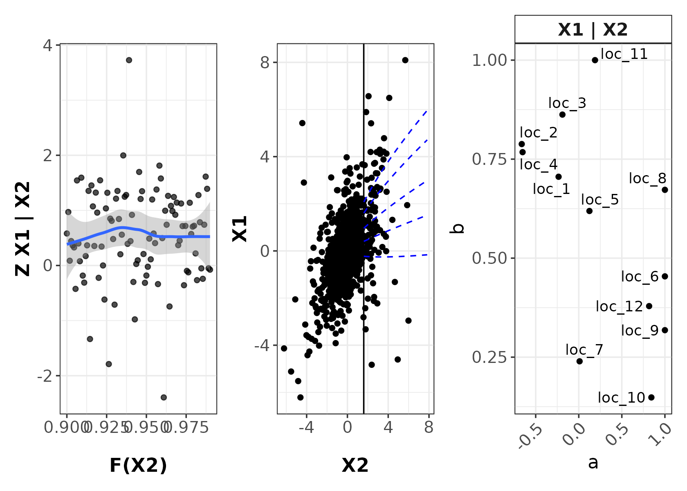
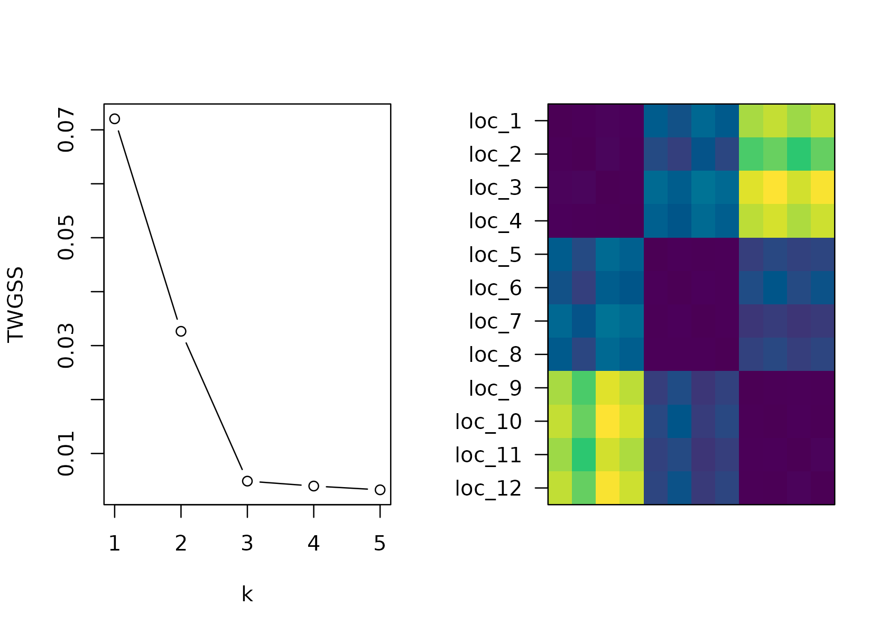
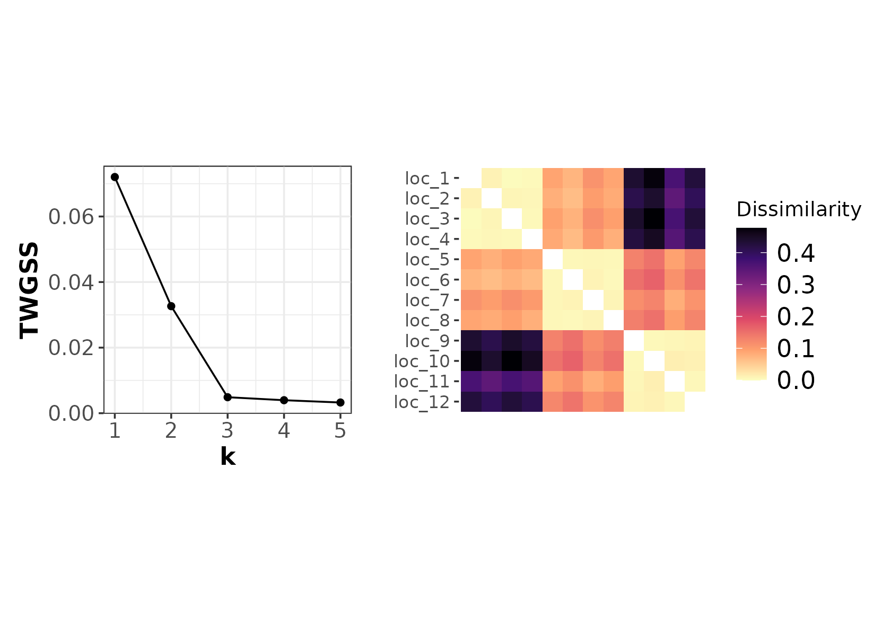
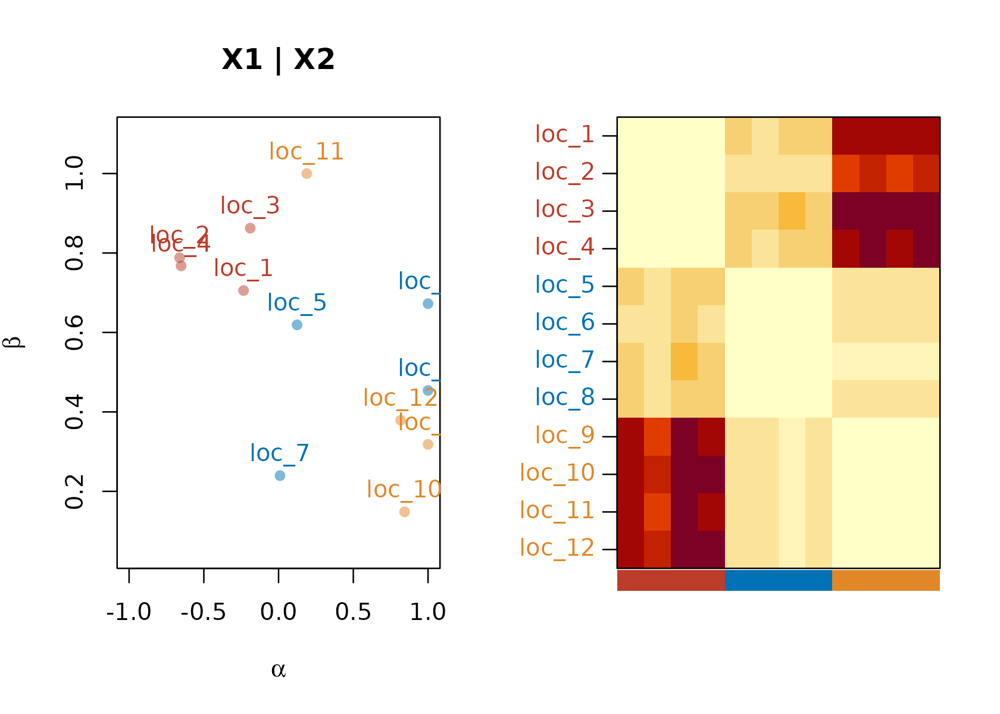
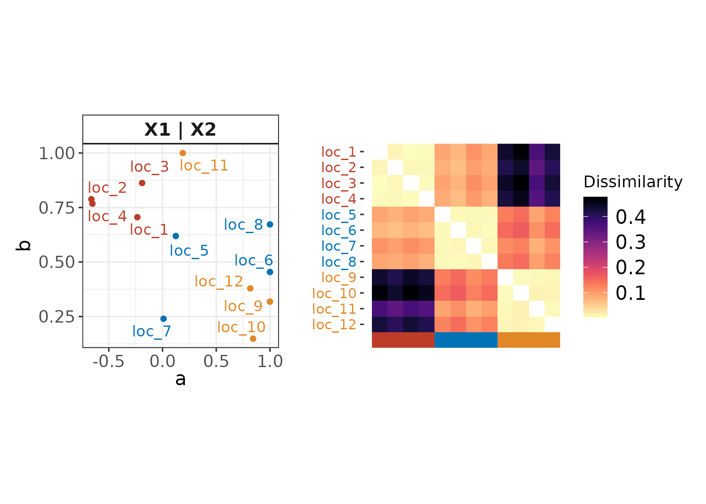

This vignette shows how to use the CeCl package
implementing the method described in O’Toole et al. (2025) to perform clustering for multivariate
extreme events based on their tail dependence structures using the
conditional extremes model of Heffernan and Tawn (2004). We begin with performing the marginal
transformation using the cecl_marg function, which has
several in-built options for marginal fitting. Optionally, the user can
also provide their own transformed data using as_cecl_marg.
Next, we fit the CE model using the cecl_dep function.
Similarly, the user can also provide their own CE parameter estimates
using as_cecl_dep.
Finally, we perform clustering of the dependence structures using the
cecl_cluster function.
Note that this package is still in the early stages of development, and may have some bugs or incomplete features and undergo significant changes in the future; please report any issues or suggestions on the GitHub issues page.
To mimic a real live scenario, we simulate some data consisting of three variables observed for 12 “locations”, clustered into 3 groups of 4 sites each. Note that although we use spatial terminology here, the method is applicable to any multivariate data, for example, financial assets, or experimental units in a clinical trial.
We simulate multivariate data using t-copulas with different correlation parameters, for generalised Pareto (GP) marginals. The correlation parameter for each group/cluster is set to be different, so that we can see if our clustering method is able to recover these groups based on their tail dependence structures.
# metadata
seed <- 123
n_vars <- 3 # number of variables
n_locs <- 12 # number of locations
n_clust <- 3 # number of clusters
# n <- 1000 * (12 / 3) # total number of observations per group
n_per_loc <- 1000 # total obs per location times # locs per group
n <- n_per_loc * (12 / 3) # total obs per location times # locs per group
df_t <- 3 # degrees of freedom for t-copula
cor_t_vec <- c(0.1, 0.5, 0.9) # correlation parameters for each group
# Function to generate multivariate t data with specified correlation
gen_t <- \(cor_t) {
# generate data
cop_t <- tCopula(param = cor_t, dim = n_vars, df = df_t, dispstr = "ex")
u <- rCopula(n, cop_t)
data.frame(apply(u, 2, qgpd, xi = -0.05, sigma = 1, u = 0))
}
# Generate data for two different correlation settings
set.seed(seed)
data <- do.call(rbind, lapply(cor_t_vec, gen_t))
# Add dummy location names
# data$name <- rep(paste0("loc_", 1:10), each = 200)
data$name <- rep(paste0("loc_", 1:12), each = nrow(data) / n_locs)
# Visualise the data
data |>
mutate(clust = case_when(
name %in% paste0("loc_", 1:4) ~ "A",
name %in% paste0("loc_", 5:8) ~ "B",
TRUE ~ "C"
)) |>
ggplot(aes(x = X1, y = X2, colour = clust)) +
facet_wrap(~ clust) +
geom_density_2d(show.legend = FALSE) +
cecl_theme() # custom CeCl theme
Visualising the data, we can see that the three groups have different dependence structures, with group A having weak dependence, group B having moderate dependence, and group C having strong dependence. More complex simulation examples using mixtures of Gaussian and t-copulas can be found in (O’Toole et al. 2025).
Generally, the CE model is fitted to data transformed to standard Laplace margins. To perform this transformation, the marginal distributions are first estimated. Generally, this is done by fitting a Generalized Pareto Distribution (GPD) to the upper tail of each variable, and using the empirical CDF for the bulk of the data.
Another important aspect of marginal fitting is threshold selection
for the GPD fit. This is a crucial and difficult step in any extreme
value analysis, and we do not attempt to provide a comprehensive
solution here. We recommend starting with the functions in
ismev or texmex for graphical threshold
selection, using mean residual life plots and threshold stability plots.
turning to the wealth of other more advanced methods available in the
literature. Once a suitable threshold quantile or value has been
selected, this can be passed to the cecl_marg function
using the thresh_method and thresh_args
arguments, which supports: - Value thresholding ("value"),
where the user specifies a fixed threshold value for each variable, -
Quantile thresholding ("quantile"), where the user
specifies a fixed quantile for each variable, - Regression thresholding
using quantile GAMs ("qgam"), where the user specifies a
formula and quantile for fitting a quantile GAM using the
qgam package (Fasiolo et al.
2021). Note that this method allows for non-stationary thresholds
that vary with covariates.
As we know our data was simulated with GP margins, thresholding is
not strictly necessary here, but we include it for demonstration
purposes (and since changing the threshold will only change the scale
parameter of the GPD fit, we do not expect it to have a large effect on
marginal modelling). Here, we show how to use each of these thresholding
methods with the cecl_marg function:
# 1: Specific value
thresh_val <- cecl_marg(
data,
thresh_method = "value",
thresh_args = apply(data[, c("X1", "X2", "X3")], 2, quantile, probs = 0.9),
thresh_only = TRUE
)
# 2. quantile
thresh_q <- cecl_marg(
data,
thresh_method = "quantile",
thresh_args = 0.9,
thresh_only = TRUE
)
# 3. Regression
thresh_reg <- cecl_marg(
data,
thresh_method = "qgam",
thresh_args = list(
f = "response ~ name",
qu = .9
),
thresh_only = TRUE,
ret_obj = TRUE # return `qgam` object
)
#> [1] "thresholding X1"
#> Estimating learning rate. Each dot corresponds to a loss evaluation.
#> qu = 0.9................done
#> [1] "thresholding X2"
#> Estimating learning rate. Each dot corresponds to a loss evaluation.
#> qu = 0.9.................done
#> [1] "thresholding X3"
#> Estimating learning rate. Each dot corresponds to a loss evaluation.
#> qu = 0.9.................done
class(thresh_q)
#> [1] "cecl_thresh" "cecl_thresh_quantile" "list"By specifying thresh_only = TRUE, the
cecl_marg function will only perform thresholding and
return an object of class cecl_thresh, which contains the
threshold values and the thresholded data, and, in the case of
regression thresholding, the fitted qgam objects. See
?cecl_marg for more details on the outputs and available
argument options. Currently, no methods are implemented for the
cecl_thresh class, but this may be added in future
versions.
Next, we can fit the marginal models and perform our transformation
to standard Laplace margins. The cecl_marg function
provides several in-built options for marginal fitting, specified using
the marg_method argument, including: - Empirical CDF
("ecdf"), which uses the empirical CDF (ECDF) for the
entire distribution, - stationary GPD ("ismev"), which fits
a GPD to the upper tail of each variable at each location using the
ismev package (Heffernan
2025), - non-stationary GPD ("evgam"), which fits a
GPD to the upper tail of each variable at each location using the
evgam package (Youngman
2022), allowing for covariate effects through generalized
additive models (GAMs). Here, we demonstrate how to use each of these
marginal fitting methods with the cecl_marg function (with
the quantile thresholding method):
# 1: ECDF
marg_ecdf <- cecl_marg(
data,
thresh_method = "quantile",
thresh_args = 0.9,
marg_method = "ecdf",
ncores = 1
)
# 2: ismev
marg_ismev <- cecl_marg(
data,
thresh_method = "quantile",
thresh_args = 0.9,
marg_method = "ismev",
ncores = 1,
# ret_obj = FALSE
ret_obj = TRUE
)
# 3: evgam
marg_evgam <- cecl_marg(
data,
thresh_method = "quantile",
thresh_args = 0.9,
marg_method = "evgam",
# model formulae for GPD scale and shape parameters
marg_args = list(f = list("excess ~ name", "~ name")),
ncores = 1,
ret_obj = TRUE
)Several methods are available for the cecl_marg class,
including print and summary:
marg_ismev
#> Call:
#> cecl_marg(data = data, thresh_method = "quantile", thresh_args = 0.9,
#> marg_method = "ismev", ret_obj = TRUE, ncores = 1)
#>
#> Number of locations: 12
#> Variables: X1, X2, X3
#> Marginal method: ismev
summary(marg_ismev, n = 5) # show GPD parameters for the first 5 locations
#> Call:
#> cecl_marg(data = data, thresh_method = "quantile", thresh_args = 0.9,
#> marg_method = "ismev", ret_obj = TRUE, ncores = 1)
#>
#> Number of locations: 12
#> Variables: X1, X2, X3
#> Marginal method: ismev
#>
#> Marginal Model Coefficients (first 5 rows):
#> name var thresh sigma xi
#> 1 loc_1 X1 2.209601 0.7142326 -0.0001212084
#> 2 loc_1 X2 2.178900 0.8038542 -0.0288469178
#> 3 loc_1 X3 2.173950 0.8843408 -0.1100568596
#> 4 loc_2 X1 2.209601 0.9319517 -0.0384288992
#> 5 loc_2 X2 2.178900 0.7121471 0.1176528462summary (from coef) prints the fitted GPD
parameters (thresh, sigma, and
xi) for each variable at each location. Since
summary shows the fitted GPD parameters for each location,
it will return an error for the ECDF method, since no GPD is fitted in
that case.
We can plot the transformed data for a given location, conditioning
variable, and variable of interest using the plot
method:
par(mfrow = c(1, 3))
plot(marg_ecdf, which = "transformed", loc = "loc_1", cond_var = "X2", var = "X1", main = "ECDF")
plot(marg_ismev, which = "transformed", loc = "loc_1", cond_var = "X2", var = "X1", main = "ISMEV")
plot(marg_evgam, which = "transformed", loc = "loc_1", cond_var = "X2", var = "X1", main = "EVGAM")
This plot shows the transformed data (from each of our three marginal
fitting methods) on standard Laplace margins, with the conditioning
variable X2 on the x-axis and the variable of interest
X1 on the y-axis. A ggplot version of this
plot is also available.
We also have access to all of the usual GPD diagnostic plots, which
we plot here for loc_1 and variable X1:
par(mfrow = c(2, 2), mar = c(4, 4, 2, 1))
plot(marg_ismev, which = c("pp", "qq", "return", "hist"), loc = "loc_1", var = "X1")
These plots are also available through ggplot:
# create plots
marg_plots <- ggplot(
marg_ismev,
which = c("pp", "qq", "return", "hist"),
loc = "loc_1",
var = "X1"
)
# arrange using patchwork
with(
marg_plots,
(pp + qq) /
((return + theme(axis.text.x = element_text(angle = 45, hjust = 1))) +
hist)
)
Unsurprisingly, since we specified GP margins when simulating the data, the GPD fits appear to be quite good, for 100 observations in the tail (10% of 1000 observations per location).
However, We also recognise that marginal fitting in extremes can be a
complex task, and users may wish to use their own preferred methods for
marginal fitting. Therefore, the CeCl package also provides
the to_cecl_marg function to allow users to provide their
own marginally transformed data in standard Laplace margins. Since we
know the parameter values of our GPD margins, we can cheat a little and
provide standard Laplace transformed data directly, using the fact that
the rescaled scale parameter is given by
,
where
and
are the new and old thresholds, respectively.
locs <- unique(data$name)
vars <- names(data)[1:n_vars]
gpd_vals <- coef(marg_ismev) |> # pull out GPD estimates
mutate(
# replace GPD estimates with (re-scaled) true values
xi = -0.05,
sigma = 1 + (xi * thresh),
# change name and var to factors to ensure correct ordering when splitting
name = factor(name, levels = locs),
var = factor(var, levels = vars)
) |>
group_split(name, .keep = FALSE) |>
lapply(\(x) group_split(x, var, .keep = FALSE))
gpd_vals <- lapply(gpd_vals, `names<-`, vars)
names(gpd_vals) <- locs
# perform transformation to standard Laplace margins (function from `CeCl`)
data_laplace <- trans_marg(gpd_vals, data, vars = vars)
names(data_laplace) <- locs
# convert to cecl_marg object
marg_custom <- as_cecl_marg(data_laplace)
marg_custom
#> Call:
#> NULL
#>
#> Number of locations: 12
#> Variables: X1, X2, X3
#> Marginal method: userUser-specified marginal transformations work the same as those fitted
with cecl_marg using the ECDF method, in that no GPD
parameters are stored, so diagnostic plotting methods are not available.
Future versions of the package will automate the above process, allowing
GPD parameters to be provided directly to as_cecl_marg,
which will then perform the necessary transformations.
Since we know that we’ve used the true marginal parameters here, we
will proceed with the marg_custom object for dependence
fitting.
marg <- marg_customNext, we fit the CE dependence model to each location using the
cecl_dep function.
dep <- cecl_dep(marg, cond_prob = 0.9, fit_no_keef = TRUE)Choosing the conditioning probability is an important step in fitting
the CE model, as it determines the threshold above which the model is
fitted. In (O’Toole et al. 2025),
following from the texmexMultivariate vignette for (Southworth et al. 2020), bootstrapped estimates
of
and
across a range of conditioning quantiles were used to identify a
suitable conditioning level, as the highest quantile at which the
estimates stabilised. Future versions of the package will include a
bootstrapping procedure to assist with this task.
The cecl_dep function contains several arguments to
control the fitting procedure, including: - start: a list
of starting values for the CE parameters
and
.
In the future, we will allow different starting values for each
location. - nruns: the number of optimisation runs to
perform for each location. - aLow: lower bound for
parameters. For instance, we may wish to restrict
to be non-negative as we expect positive tail dependence. -
fixed_b: a logical indicating whether to fix
parameters to it’s starting value, which can be useful for
interpretation by estimating only the
parameters. - fit_no_keef: a logical indicating whether to
fit the model without the Keef et al. (2013) constraints (Keef et al. 2013), which can sometimes be too
restrictive and cause optimisation issues. Furthermore, for Linux and
Mac users with multiple cores available, the fitting can be parallelised
using the ncores argument. This is also true of all
functions including an ncores argument, including
cecl_marg.
The cecl_dep function returns an object of class
cecl_dep, which has several methods available:
dep
#> Call:
#> cecl_dep(obj = marg, cond_prob = 0.9, fit_no_keef = TRUE)
#>
#> Number of locations: 12
#> Dependent Variables: X1, X2, X3
#> Conditioning Variables: X1, X2, X3
head(summary(dep))
#> name var cond_var a b m s ll
#> 1 loc_1 X2 X1 0.65632916 0.3946159 -0.8047117 1.2812492 199.8645
#> 2 loc_1 X3 X1 -0.41647639 0.8069403 0.5257057 0.8399368 192.8370
#> 3 loc_1 X1 X2 -0.23430053 0.7055356 0.5123284 0.9967373 202.5795
#> 4 loc_1 X3 X2 -0.09629775 0.8352500 0.1508311 0.8459299 197.4836
#> 5 loc_1 X1 X3 -0.99999965 0.7459580 1.3754470 0.8556436 192.0174
#> 6 loc_1 X2 X3 -0.99971991 0.8986208 1.1682555 0.7172376 187.9236
#> dth
#> 1 1.601482
#> 2 1.601482
#> 3 1.601482
#> 4 1.601482
#> 5 1.601482
#> 6 1.601482Future versions of the package will also include a
predict method for generating conditional simulations from
the fitted CE models, as found in the texmex package (Southworth et al. 2020).
We also have access to several diagnostic plots for the fitted CE
models: - residual plots the residuals
against large values of the conditioning variable, -
quantile plots quantiles of the fitted CE model against the
conditioning variable (on the standard Laplace scale), -
scatter plots the
and
parameters against each other for a given variable and conditioning
variable. Let’s plot these for the fifth location, which has reasonable
dependence, and produce a scatter plot of
values across all locations for X1 conditioned on
X2:
par(mfrow = c(1, 3))
plot(dep, which = "residual", var = "X1", cond_var = "X2", loc = "loc_5")
plot(dep, which = "quantile", var = "X1", cond_var = "X2", loc = "loc_5")
plot(dep, which = "scatter", var = "X1", cond_var = "X2")
The residual plot should roughly show no obvious patterns (as
indicated by the horizontal trend), and the quantile plot should look
sensible.
Again, these plots are also available through ggplot:
ggplot(dep, which = "residual", var = "X1", cond_var = "X2", loc = "loc_5") +
ggplot(dep, which = "quantile", var = "X1", cond_var = "X2", loc = "loc_5") +
(
ggplot(dep, which = "scatter", var = "X1", cond_var = "X2") +
theme(axis.text.x = element_text(angle = 45, hjust = 1))
)
#> `geom_smooth()` using method = 'loess' and formula = 'y ~ x'
It is a good idea to print these diagnostic plots for all locations and variable combinations to ensure that the fits are sensible before proceeding to clustering. For example, to print all residual and quantile plots to a PDF, you could run something like:
pdf("cecl_dep_diagnostics.pdf", width = 8, height = 6)
for (loc in unique(data$name)) {
ggplot(dep, which = "residual", var = "X1", cond_var = "X2", loc = loc) +
ggplot(dep, which = "quantile", var = "X1", cond_var = "X2", loc = loc)
}
dev.off()Finally, as with our marginal models, users may wish to provide their
own fitted CE parameters for each location. The CeCl
package provides the as_cecl_dep function to allow users to
provide their own CE parameter estimates in a list (with
data.frame/tibble entries) or
data.frame/tibble format (matching the output
of coef(dep)).
dep_df <- coef(dep)
head(dep_df)
#> name var cond_var a b m s ll
#> 1 loc_1 X2 X1 0.65632916 0.3946159 -0.8047117 1.2812492 199.8645
#> 2 loc_1 X3 X1 -0.41647639 0.8069403 0.5257057 0.8399368 192.8370
#> 3 loc_1 X1 X2 -0.23430053 0.7055356 0.5123284 0.9967373 202.5795
#> 4 loc_1 X3 X2 -0.09629775 0.8352500 0.1508311 0.8459299 197.4836
#> 5 loc_1 X1 X3 -0.99999965 0.7459580 1.3754470 0.8556436 192.0174
#> 6 loc_1 X2 X3 -0.99971991 0.8986208 1.1682555 0.7172376 187.9236
#> dth
#> 1 1.601482
#> 2 1.601482
#> 3 1.601482
#> 4 1.601482
#> 5 1.601482
#> 6 1.601482
dep_df$ll <- NULL # log-likelihood from optimisation optional
# can run on data.frame
dep_custom1 <- as_cecl_dep(dep_df)
# can also run on list with data.frame for each location
dep_list <- dep_df |>
# ensures `name` ordering is preserved
mutate(name = factor(name, levels = unique(dep_df$name))) |>
group_split(name, .keep = TRUE) |>
setNames(unique(dep_df$name)) |>
as.list()
dep_custom2 <- as_cecl_dep(dep_list)
all.equal(dep_custom1, dep_custom2) # confirm we get the same output
#> [1] TRUE
dep_custom1
#> Call:
#> NULL
#>
#> Number of locations: 12
#> Dependent Variables: X1, X2, X3
#> Conditioning Variables: X1, X2, X3Currently, only non-stationarity in a single parameter (e.g. location) is supported for user-inputted CE parameters (with separate CE models fit at each level, rather than a smooth effect). This can be hacked by pasting together multiple variables (e.g. location and time), although results may vary.
Finally, we can cluster the fitted CE models using the skew-geometric
Jensen-Shannon based dissimilarity measure proposed in (O’Toole et al. 2025). First, to calculate the
dissimilarity matrix, we can use the cecl_dist
function:
dist <- cecl_dist(dep, marg_ismev, seed = seed)cecl_dist also has several arguments to control the
distance calculation, including: - laplace_cap: The
divergence is estimating using Monte Carlo integration, simulating
values of the conditioning variable from a standard Laplace
distribution. To avoid issues with extremely large values on the
standard Laplace scale, we cap the maximum quantile used for simulation
at laplace_cap (default 0.99). - n_mc: The
number of Monte Carlo samples to use for estimating the divergence. -
par_dist: An optional argument to parallelise the distance
calculation itself, rather than parallelising across conditioning
variables. Useful when the number of locations is large.
The cecl_dist function returns an object of class
cecl_dist, which has several methods available:
dist
#> Distance matrix of class 'cecl_dist'
#> Number of locations: 12
#> Variables: X1, X2, X3
summary(dist) # gives summary of aggregated dissimilarity matrix
#> Min. 1st Qu. Median Mean 3rd Qu. Max.
#> 0.002454 0.013034 0.097200 0.154738 0.161740 0.476989We can produce a scree plot of the total within-group sum of squares
(TWGSS) for different numbers of clusters k, as well as a
heatmap/image of the dissimilarity matrix:
par(mfrow = c(1, 2))
invisible(plot(dist, which = "scree")) # normally prints TWGSS for each k
plot(dist, which = "image")
And also in ggplot:
ggplot(dist, which = "scree")$plot +
(ggplot(dist, which = "image") +
theme(
axis.text.y = element_text(size = 10),
legend.title = element_text(size = 11.5)
))
Unsurprisingly, the scree plot should show a clear “elbow” at the true number of clusters (3 in this case), and the dissimilarity matrix should show three distinct blocks along the diagonal.
Finally, we can perform clustering using the cecl_clust
function:
clust <- cecl_clust(
dist,
k = 3,
cluster_mem = sort(rep(1:3, each = 4)), # known cluster membership
seed = seed
)Optionally, we can also run cecl_clust on the
cecl_dep and cecl_marg objects directly,
without needing to calculate the distance matrix first:
clust_dep <- cecl_clust(
dep,
marg_ismev,
k = 3,
cluster_mem = sort(rep(1:3, each = 4)), # known cluster membership
seed = seed
)clust_dep$dist_obj will be identical to the output of
cecl_dist calculated previously, in case the user wishes to
inspect it.
The cecl_clust function returns an object of class
cecl_clust, which has several methods available:
clust
#> Clustering results of class 'cecl_clust'
#> Number of locations: 12
#> Number of clusters: 3
#> Adjusted Rand index: 1
summary(clust)
#> Medoids:
#> ID
#> [1,] "3" "loc_3"
#> [2,] "5" "loc_5"
#> [3,] "9" "loc_9"
#> Clustering vector:
#> loc_1 loc_2 loc_3 loc_4 loc_5 loc_6 loc_7 loc_8 loc_9 loc_10 loc_11
#> 1 1 1 1 2 2 2 2 3 3 3
#> loc_12
#> 3
#> Objective function:
#> build swap
#> 0.004874233 0.004874233
#>
#> Numerical information per cluster:
#> size max_diss av_diss diameter separation
#> [1,] 4 0.008410853 0.003980231 0.01119181 0.06585687
#> [2,] 4 0.007392932 0.005019369 0.01024108 0.06585687
#> [3,] 4 0.009761591 0.005623098 0.01407303 0.08046704
#>
#> Isolated clusters:
#> L-clusters: character(0)
#> L*-clusters: [1] 1 2 3
#>
#> Silhouette plot information:
#> cluster neighbor sil_width
#> loc_3 1 2 0.9441209
#> loc_4 1 2 0.9348022
#> loc_1 1 2 0.9347957
#> loc_2 1 2 0.8910212
#> loc_5 2 1 0.9233402
#> loc_8 2 1 0.9212550
#> loc_7 2 1 0.9153137
#> loc_6 2 1 0.8995880
#> loc_9 3 2 0.9433953
#> loc_10 3 2 0.9273822
#> loc_12 3 2 0.9248353
#> loc_11 3 2 0.9041223
#> Average silhouette width per cluster:
#> [1] 0.9261850 0.9148742 0.9249338
#> Average silhouette width of total data set:
#> [1] 0.9219977
#>
#> Available components:
#> [1] "medoids" "id.med" "clustering" "objective" "isolation"
#> [6] "clusinfo" "silinfo" "diss" "call"We can see that the clustering has perfectly recovered the true
clusters based on the Adjusted Rand Index (ARI) of 1. The
summary method is that of pam. However, since
silhouette widths are not applicable for our dissimilarity measure,
please ignore this part of the output (we may remove this in future
versions).
We can also produce the scatter and image
plots from previous sections, but this time with the locations ordered
and coloured by their assigned cluster:
par(mfrow = c(1, 2))
plot(clust, which = "scatter", var = "X1", cond_var = "X2")
plot(clust, which = "image")
Because the x-axis labels are suppressed, a colour bar is included to show cluster membership.
And also in ggplot:
ggplot(clust, which = "scatter", var = "X1", cond_var = "X2") +
(ggplot(clust, which = "image") +
theme(
axis.text.y = element_text(size = 10),
legend.title = element_text(size = 11.5)
))
#> Warning: Vectorized input to `element_text()` is not officially supported.
#> ℹ Results may be unexpected or may change in future versions of ggplot2.
In conclusion, we have successfully used the CeCl
package to cluster multivariate data based on their tail dependence
structures using the conditional extremes model. Please refer to the
package documentation for more details on the available functions and
methods, or contact the author for any questions or suggestions.